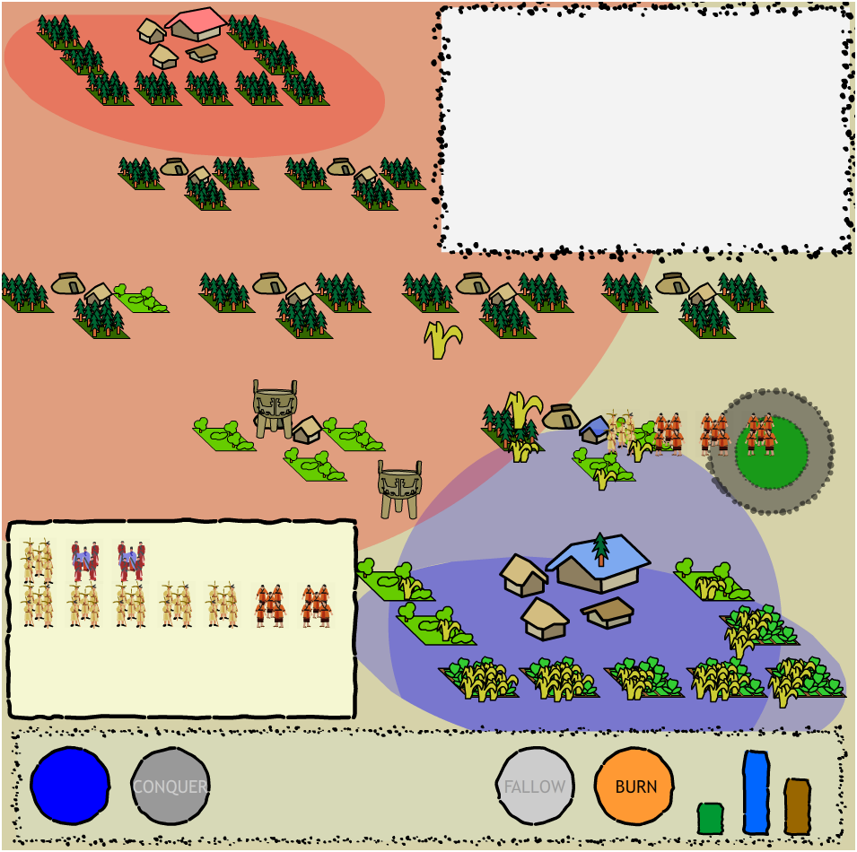

Looking back over some old notes of mine, I was reminded that I made this game in Flash three years ago:

You control a small early historical site surrounded by virgin woodland. The forest provides lumber, but if you burn it down, you can use it for agricultural production. Of course, the forest provides enough food to maintain a small population, but not enough to allow for specialization. Once you’ve begun to specialize, you can flip your farmer units into military or political specialists, the former can be sent out into nearby villages to conquer them and the latter send out trade goods and increase your sphere of influence. It’s necessary to increase your sphere of influence because otherwise conquered neighboring villages will quickly revert to neutral status.But what separates this from a typical game of conquest is that all the while the fragile ecosystem you inhabit is suffering. For instance, when you first burn down a fully forested square, you’re given agricultural land with soil rich enough to provide abundant crops, but continuous cropping depletes the soil and results in lower and lower yields, forcing you to bring more land into production just to meet the same food production requirements, but since your increased production has caused increased population, there is even greater pressure to provide more food, which necessitates conquering nearby villages to burn their forest to bring more land into production.
It is an attempt not only to show this socio-environmental feedback loop but also to illustrate forest fallow and brush fallow cropping (as per Boserup’s definition), since you can let the land sit fallow until it is restored to forest, at which point you can burn it to fertilize it, or, if there is too much pressure, burn it when it has only grown back to brush. There are other factors, regarding trade and the need for lumber, all of which try to reinforce the pressures on early cultures and the resultant administrative and social technologies that arose from the transaction costs of managing such a turbulent system.
To be very clear, it isn’t much of a game, and is likely incomprehensible and not fun, but it’s embedded below, in case there’s some desire to see it in action. As a teaching tool, something like this (though better realized) would be capable of presenting several complex systems principles to an undergraduate or even high school or earlier audience, but it is in the formalization of claims as to how certain historical processes work that most interest me. By building these small, abstract models, we are forced to define basic processes beyond a prose explanation that, while sophisticated, is ultimately unable to be integrated into large, interactive representations of historical systems.